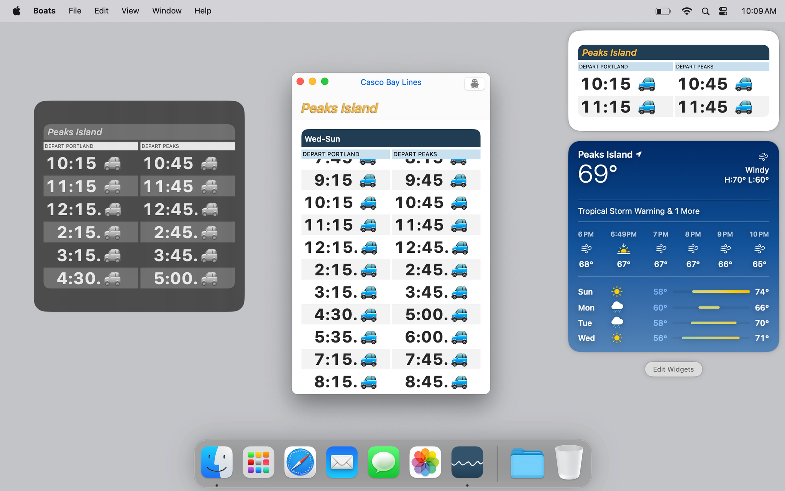

<!DOCTYPE html>
<title>Boats - Todd Heasley</title>
<meta name="viewport" content="initial-scale=1.0">
<meta name="apple-itunes-app" content="app-id=1152562893">
<link rel="stylesheet" href="default.css">
<header>
    <h1><a href="index.html">Todd&nbsp;Heasley</a></h1>
</header>
<main>
    <h1>Boats</h1>
    <h2><time>2015 - 2021</time></h2>
    <figure><a href="boats.png"><span></span></a></figure>
    <p><a href="https://cascobaylines.com">Casco Bay Lines</a> ferry schedules for iPhone, iPad and Apple Watch</p>
    <p><a href="https://apps.apple.com/app/id1152562893"><span></span></a> <a href="https://github.com/toddheasley/boats"></a></p>
    <figure><a href="boats-mac.png"><span></span></a> <figcaption>Boats for Mac</figcaption></figure>
    <p><a href="https://apps.apple.com/app/id1499291566"><span></span></a></p>
</main>
<footer>
    <p><a href="https://github.com/toddheasley">@toddheasley</a></p>
</footer>